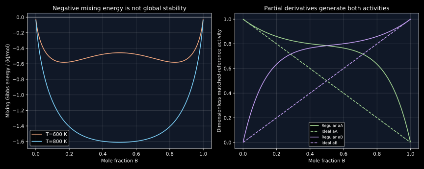

11. Mixing, chemical potentials, activities and transfer equilibrium
A solution's molar Gibbs energy is a function of composition. Its chemical potentials are derivatives of the total extensive energy, not arbitrary shares assigned to particular atoms. Once these derivatives are obtained consistently, the weighted-average identity, Gibbs–Duhem relation, activities and material-transfer conditions follow together. The same framework explains why favorable mixing relative to pure components does not necessarily mean stability against a partially separated state.
Both complete local transcripts of lessons 19–20 were read sequentially. They develop the interaction parameter, configurational mixing entropy, partial molar quantities, vapor-pressure intuition and chemical-potential equilibrium. This chapter derives the skipped Stirling, chain-rule and extensivity steps and qualifies the standard-state assumptions behind activity equality. The regular-solution calculations are original declared models. Primary oxide papers supply a bounded research discussion; no experimental phase diagram is reproduced.
11.1 Choose the unmixed reference before calculating a mixing change L 19 · 01:06
Fix temperature and pressure, choose a phase structure $\phi$, and let $x=x_B$ so $x_A=1-x$. The molar energy of the corresponding pure-endmember mechanical mixture is $(1-x)g_A^\phi+xg_B^\phi$. Define the phase's mixing change relative to those endmembers by
These endmembers must share a compatible reference and amount basis. If the physically separated starting elements occupy different stable structures, their conversion into structure $\phi$ requires lattice-stability contributions as well. Those costs are not part of a mixing change defined relative to pure endmembers already in $\phi$. Using the latter reference while verbally claiming the former reaction omits a physical term.
The pair-count derivation in chapter 10 gives a random mean-field enthalpy $\Delta h_{\rm mix}=\Omega x(1-x)$ when coordination is fixed and nonpair corrections are neglected. Here $\Omega$ has units J/mol of mixing sites; it is not a bond count or an entropy. A positive constant $\Omega$ penalizes unlike neighbors relative to the like-bond average. Its parabolic enthalpy reaches $\Omega/4$ at equimolar composition. Negative $\Omega$ instead has its most negative value there. These statements describe the specified energetic term; entropy and competing phases still matter.
“No interaction” for an ideal solution means no excess thermodynamic mixing contribution in that model. It does not mean no cohesive forces in a solid. Likewise, a positive exchange energy does not prove all unlike pairs repel in an isolated pair experiment. The reference difference, actual interaction and phase-level fitted parameter are related concepts with distinct definitions.
11.2 Derive the random configurational entropy and its limits L 19 · 07:55
Place $N_A$ atoms of one species and $N_B$ of another on $N=N_A+N_B$ equivalent substitutional sites. With fixed counts and all site labelings allowed, the number of chemical arrangements is $\Omega_c=N!/(N_A!N_B!)$. The factorials remove permutations among indistinguishable atoms of the same species. Relative to a specified perfectly segregated chemical assignment, the configurational change is $k_B\ln\Omega_c$. Translational grain placement, interfaces and other nonextensive degeneracies are excluded from this ideal counting model.
To obtain the macroscopic expression, apply $\ln m!=m\ln m-m+O(\ln m)$. The leading integral of $\ln t$ supplies $m\ln m-m$, while sum–integral bounds leave only logarithmic corrections. Thus
Divide by the amount of mixing sites $N/N_{\!A}^{\rm Av}$ to obtain the thermodynamic-limit molar entropy
The minus sign is essential: the logarithms are negative for interior fractions, so mixing entropy is positive. Interpret $x\ln x$ as zero at an endpoint by its limit. Differentiation gives $d\Delta s_{\rm id}/dx=R\ln[(1-x)/x]$ and $d^2\Delta s_{\rm id}/dx^2=-R/[x(1-x)]\lt 0$. The maximum is $R\ln2$ at $x=1/2$. For $m$ species on one equivalent sublattice, the multinomial argument gives $-R\sum_i x_i\ln x_i$, maximized at $x_i=1/m$ with value $R\ln m$.
A finite system retains a correction. For exactly 30 $B$ atoms on 100 sites, direct logarithms of factorials give $S_c/k_B=58.642095641$, whereas the extensive Stirling term gives 61.086430205. Dividing their difference by 100 makes the finite-size nature explicit. The macroscopic formula is not an exact replacement for small-system combinatorics.
Random-label entropy is also not a universal entropy of every arrangement with a specified number of unlike bonds. If pair energies matter, arrangements with different bond counts have different energies and probabilities. A short-range-order model retains such correlations; a sublattice model can describe long-range chemical order. The regular-solution approximation deliberately retains random configurational entropy despite its nonzero mean-field energy. It should not be advertised as an exact prediction of pair correlations. Defects, vibrations, electrons, magnetism and structural basins may contribute other entropy terms.
On a compound's sublattice, the amount basis matters. Five equimolar cations on one fully occupied cation sublattice contribute $R\ln5=13.381611359$ J/(mol of cation sites K). In an ideal stoichiometric monoxide there is one oxygen for every cation; per mole of all atoms the same contribution is half that value. Counting chemically uniform oxygen sites as five-way mixing sites would double-count degrees of freedom that are absent from the stated model.
11.3 A negative mixing value is only one comparison L 19 · 25:18
For the simple regular solution, take constant $\Omega$ and neglect excess entropy. The molar mixing energy is
The first term is negative and favors mixing. The second can reinforce or oppose it. But comparing with the straight pure-endmember line tests only the separated pure states. A mixture of two nonpure compositions can lie lower still. An infinitesimal symmetric composition split, keeping equal amounts at $x-\epsilon$ and $x+\epsilon$, changes the molar energy by
For $\Omega=12000$ J/mol and $T=600$ K, the equimolar mixing energy is−457.887792986 J/mol, yet $g''(1/2)=-4045.289716432$ J/mol. A split into 0.49 and 0.51 lowers the energy by 0.202197959 J/mol. Thus the homogeneous equimolar state is locally unstable despite negative mixing relative to the pure components. The next chapter develops the full supporting-line equilibrium test; this example already refutes a sign-only criterion.
The parameter's temperature dependence changes the interpretation. If a fitted excess Gibbs energy is $g^{\rm ex}=\Omega(T)x(1-x)$, then $s^{\rm ex}=-\Omega'(T)x(1-x)$ and $h^{\rm ex}=[\Omega-T\Omega']x(1-x)$. A parameter inside a Gibbs model is not automatically an enthalpy when it depends on temperature. The declared constant-parameter example avoids that ambiguity. A composition-dependent parameter would also require its composition derivative in the chemical potentials below.
11.4 Differentiate the extensive energy to obtain partial molar quantities L 19 · 28:28
Let $n=n_A+n_B$ and $x=n_B/n$. A homogeneous bulk phase with negligible surface contributions has total energy $G=n g(x)$ at fixed $T,p$. Its chemical potentials are defined by $\mu_A=(\partial G/\partial n_A)_{T,p,n_B}$ and $\mu_B=(\partial G/\partial n_B)_{T,p,n_A}$. They measure the derivative of the whole phase's energy as an infinitesimal amount changes. They are not uniquely assignable energies of individual dissolved atoms.
At fixed $n_B$, $\partial n/\partial n_A=1$ and $\partial x/\partial n_A=-x/n$. At fixed $n_A$, $\partial x/\partial n_B=(1-x)/n$. The chain rule therefore yields
Multiplying by $1-x$ and $x$ cancels the derivative terms, giving $g=(1-x)\mu_A+x\mu_B$. The tangent at composition $x$ has intercept $\mu_A$ at composition zero and value $\mu_B$ at composition one. These are values of a single local tangent, not a line joining arbitrary pure-component chemical potentials at other states. As composition changes, the tangent and both partial molar quantities generally change.
The same chain rule applies to any differentiable extensive property $M=n m(x)$: $\bar M_A=m-xm'$ and $\bar M_B=m+(1-x)m'$. The partial molar volume can, for example, differ from the pure substance's molar volume. Finite partial quantities can be negative under a chosen property or reference convention; they are response coefficients, not literal spatial pieces allocated to one molecule.
For a finite addition, integrate the derivative. At fixed $T,p,n_B$, $G(n_A+\Delta n_A,n_B)-G(n_A,n_B)=\int_{n_A}^{n_A+\Delta n_A}\mu_A(a,n_B)\,da$. Multiplying the initial chemical potential by a finite amount is only a first-order approximation unless the derivative is constant. The rest of the solution changes composition and chemical environment when a new atom enters, even though the amount of the other species stays fixed.
Extensivity means $G(\lambda n_A,\lambda n_B)=\lambda G(n_A,n_B)$ at fixed intensive state. It does not imply that adding matter must increase the numerical value of $G$: a negative chemical potential makes that derivative negative in the chosen reference. Nor does the energy change of the receiving subsystem alone determine spontaneous transfer; the supplying subsystem loses the same material and contributes its own chemical-potential term.
11.5 Extensivity produces Euler and Gibbs–Duhem relations L 20 · 01:19
For $m$ species in a homogeneous bulk phase, differentiate the scaling equation $G(T,p,\{\lambda n_i\})=\lambda G(T,p,\{n_i\})$ with respect to $\lambda$ at one. This proves Euler's identity $G=\sum_i n_i\mu_i$. Its differential is $dG=\sum_i\mu_i\,dn_i+\sum_i n_i\,d\mu_i$. Compare with the general state identity
Subtracting gives $\sum_i n_i\,d\mu_i=-S\,dT+V\,dp$. At fixed temperature and pressure, divide by $n$ to obtain the Gibbs–Duhem relation $\sum_i x_i\,d\mu_i=0$. Hence the chemical potentials cannot be chosen independently as arbitrary composition functions. The relation acquires the temperature and pressure terms when those variables change; omitting that condition gives a false general identity.
For the binary chain-rule formulas, differentiation at fixed $T,p$ gives $d\mu_A/dx=-xg''$ and $d\mu_B/dx=(1-x)g''$. Their weighted sum vanishes. If $g''\gt 0$, increasing $x_B$ raises $\mu_B$ and lowers $\mu_A$. In a concave constrained branch the signs reverse, so the recording's intuitive seesaw direction is not a universal monotonicity assertion independent of stability.
For constant $\Omega$, differentiating the declared regular model gives
The excess chemical potentials contain squared fractions of the other component. They are not both equal to the integral molar excess energy $\Omega x(1-x)$. At 800 K, $x_B=0.3$, $g_A^\phi=-10000$ and $g_B^\phi=-20000$ J/mol, the model gives $g=-14543.206723360$, $\mu_A=-11292.448390568$ and $\mu_B=-22128.309499873$ J/mol. Euler's identity and independent finite differences of total $G$ agree.
Starting from 0.7 mol $A$ and 0.3 mol $B$, adding 0.2 mol $A$ gives exact $\Delta G=-2245.287233895$ J. The initial-$\mu_A$ approximation gives−2258.489678114 J, while numerical integration of the changing chemical potential recovers the exact difference. This is a check of the derivative definition, not a recipe for physical mixing work without specifying the source reservoir.
11.6 A derivative audit catches plausible but inconsistent formulas
Partial molar quantities retain the thermodynamic transformations of total properties. At fixed temperature, write $G=H-TS$ and differentiate with respect to $n_i$ while holding pressure and all other species amounts fixed. Since the derivative does not change $T$,
The temperature and pressure derivatives keep all amounts fixed, hence composition fixed. For the constant-parameter regular model, the mixing parts are $\Delta\bar h_A=\Omega x^2$, $\Delta\bar h_B=\Omega(1-x)^2$, $\Delta\bar s_A=-R\ln(1-x)$ and $\Delta\bar s_B=-R\ln x$. Multiplying by component fractions and adding recovers the integral molar mixing enthalpy and entropy. For example, $(1-x)\Omega x^2+x\Omega(1-x)^2=\Omega x(1-x)$. The weighted average is a consequence of extensivity; the two partial quantities need not themselves equal the average.
The pressure derivative also separates an ideal-solution approximation from an unsupported statement about volume. If the ideal mixing chemical-potential change is exactly $RT\ln x_i$ with no pressure dependence, its mixing partial volume is zero. If the pure-endmember volumes differ, the solution still has the weighted pure volume. Zero excess or mixing volume does not mean zero actual volume. A pressure-dependent excess parameter would create additional partial-volume terms and cannot be ignored while retaining its effects elsewhere.
Gibbs–Duhem is particularly useful when interpreting experimental activities. With a common composition-independent standard at fixed $T,p$, $d\mu_i=RT\,d\ln a_i$, hence $(1-x)d\ln a_A+x\,d\ln a_B=0$. If $a_A(x)$ is known over a suitable interval, then
A reference value for $a_B$ is still required. Differentiation magnifies measurement noise, endpoint factors can be singular, and inconsistent standard conventions can spoil an otherwise correct integration. The relation is a consistency constraint and an information-transfer route, not permission to invent the missing integration constant. It also shows why independently fitting two noisy activity curves can create a thermodynamic inconsistency even if each curve looks smooth.
At a dilute endpoint, the ideal logarithmic chemical potential diverges while the total mixing energy remains finite. The limiting fact is $x\ln x\to0$. The work-like integral of the singular logarithm is integrable: $\int_0^\epsilon\ln x\,dx=\epsilon\ln\epsilon-\epsilon$. Thus a divergent derivative does not imply infinite energy for adding a finite trace amount. The program below evaluates interior compositions only; exact pure-endmember values must be supplied by these limits rather than by blindly evaluating $\ln0$.
Finally, define a dimensionless composition-response factor for component $B$, $\Gamma_B=(x/RT)(d\mu_B/dx)$ at fixed $T,p$. The binary chain-rule identity gives $\Gamma_B=x(1-x)g''/(RT)$. For the regular model this becomes $1-2\Omega x(1-x)/(RT)$. The factor is positive on locally convex branches, vanishes at the local stability limit, and is negative on a concave branch. This thermodynamic derivative will later enter transport models, but it is not itself a diffusion coefficient: a kinetic mobility and the appropriate conservation law are still needed. The separation prevents an equilibrium energy model from silently acquiring an unmeasured transport rate.
11.7 Activity is a dimensionless representation of chemical potential L 20 · 14:58
Specify a standard chemical potential $\mu_i^\circ(T,p)$ and define $a_i\gt 0$ through $\mu_i=\mu_i^\circ+RT\ln a_i$. This is a thermodynamic definition, not a count of the fraction of atoms that are moving or “active.” The activity coefficient $\gamma_i=a_i/x_i$ represents departure from the chosen mole-fraction ideal model. Its numerical value depends on the standard convention; activity is not generally a probability bounded by one.
For pure-endmember standards within phase $\phi$, take $\mu_i^\circ=g_i^\phi$. The ideal solution has $a_i=x_i$ and $\gamma_i=1$. In the declared regular model,
At the 800 K example, $a_A=0.823404862$, $a_B=0.726170100$, $\gamma_A=1.176292660$ and $\gamma_B=2.420566998$. Both activities exceed their respective mole fractions but remain below one at this state. Negative constant $\Omega$ would give negative deviations in this model. In a general real solution, the sign of total mixing enthalpy alone does not fix each component's activity coefficient at every composition; activity depends on partial excess Gibbs energy, including entropy.
The vapor-pressure interpretation follows from another derivative. A one-component ideal gas at fixed temperature has $d\mu=v\,dp=RT\,dp/p$, so $\mu_g(p_2)-\mu_g(p_1)=RT\ln(p_2/p_1)$. At material-transfer equilibrium, the same chemical species has equal chemical potential in the condensed phase and vapor. Subtract two such equilibria, one for the solution and one for the chosen condensed standard, at matched temperature and pressure conventions. If the vapor species is ideal and chemically identical in both cases,
For stipulated matched-reference vapor pressures $p_A^{\rm ref}=100$ Pa and $p_B^{\rm ref}=20$ Pa, the example predicts partial pressures 82.340486220 and 14.523401990 Pa. The atmosphere's total pressure is not substituted for either component's partial pressure. Nonideal gases require fugacities instead of partial pressures. Molecular association, dissociation or different vapor species require the chemical equilibrium and stoichiometry to be included.
There is also a pressure-reference caveat. A pure condensed phase equilibrated with its own saturated vapor can be at a different total pressure from a solution under an inert gas. Its chemical potential needs the correction $\int v_i\,dp$ before being used as a standard at the solution's pressure; the resulting activity relation includes that pressure correction. The simple pressure ratio assumes these reference issues are already matched or negligibly small. Raoult's law $p_i=x_i p_i^{\rm ref}$ follows for the ideal solution with that same matched convention.
A dilute solution provides a useful alternate standard. For the regular model at $x_B\to0$, $a_B/x_B\to\exp[\Omega/(RT)]$ in the pure-$B$ convention. Moving this constant into a Henry-type standard, $\mu_B^H=\mu_B^\circ+RT\ln\gamma_B^\infty$, rescales activity to $a_B^H=a_B/\gamma_B^\infty$, whose ratio to $x_B$ tends to one. Physical $\mu_B$ is unchanged. Statements such as “the activity equals the mole fraction” are meaningful only after the standard is named.
11.8 Equality applies to each transferable component across phases L 20 · 25:18
Transfer an infinitesimal amount $dn_i$ of component $i$ from phase $\alpha$ to phase $\beta$ while keeping total amount, temperature and pressure fixed. The total change is $dG=(\mu_i^\beta-\mu_i^\alpha)dn_i$. If transfer in either direction is admissible, equilibrium requires $\mu_i^\alpha=\mu_i^\beta$. A lower chemical potential is the destination favored by that differential comparison. Barriers may slow transfer; chemical constraints or absent phases can turn equalities into boundary inequalities.
The condition is not $\mu_A=\mu_B$ within a phase. The components are separately conserved and are not freely interchangeable. If chemical reactions occur, the allowed stoichiometric variations instead give $\sum_i\nu_i\mu_i=0$ for an equilibrated reaction. Charge and electric fields likewise require electrochemical potentials for charged-species transfer; the uncharged bulk treatment here does not include those terms.
Equal activities across phases follow only with a common standard for the component. In general,
If the standard difference is 3000 J/mol at 1000 K and $a_i^\alpha=0.4$, equilibrium gives $a_i^\beta=0.278842605$, not 0.4. Both chemical potentials are still equal. Conversely, when both activities use the same pure component standard at the same temperature and pressure, their equality is equivalent to chemical-potential equality. The recording's shared-vapor argument implicitly uses that common reference; applying it to phase-specific standards without conversion would be incorrect.
The MIT solution-model notes, read in full, provide a parallel route from ideal gases to activities and simple regular solutions. The chain-rule derivation here makes explicit why both activities must come from a consistent extensive potential. Fitting two unrelated activity curves can violate Gibbs–Duhem and fail to represent any single thermodynamic state function.

11.9 Research connection: maximum ideal entropy is not a phase-stability proof
Rost and colleagues'2015 oxide study investigates a five-cation rocksalt system using thermal reversibility, composition variation, calorimetry and local structural probes. Its main text and full Methods were read; supplementary raw data were not audited. The study supplies a historically important application of configurational entropy, but a maximum ideal count is not a complete comparison with every competing phase. The paper itself discusses structural-energy penalties, nonzero mixing energies and oxygen loss during an intermediate transformation.
At 875°C, or 1148.15 K, our ideal five-cation estimate is $T R\ln5=15364.097082033$ J per mole of cation sites. Changing fractions to 0.4,0.15,0.15,0.15,0.15 reduces the ideal entropy to 12.511505933 J/(mol sites K). These computations establish a counting-model difference. They do not establish a formation temperature: changing composition also changes endmember weights, interaction energies, competing-phase amounts and possibly oxygen exchange.
A 2022 experimental Matters Arising by Fracchia and colleagues, read in full, tests reduced-component formulations while controlling selected CuO and ZnO fractions. It reports related single-phase and reversible behavior with fewer cations and argues that configurational entropy alone does not dominate the stability comparison. This does not negate an entropy contribution; it challenges assigning dominance from selected observations. An oxide equilibrated with air may also require an oxygen-reservoir potential rather than fixed-oxygen closed-system $G$. Our original calculation fits neither study and adjudicates neither dataset. It shows exactly where the ideal formula enters, and which additional energy, composition and reservoir terms remain to be assessed.
11.10 Reproducible numerical checks
The following standard-library program checks amount derivatives independently, Euler and Gibbs–Duhem consistency, finite addition by chemical-potential integration, activity conversion, a negative-mixing unstable state and ideal sublattice counting. It contains no fitted oxide parameters. Its displayed output was generated by executing the exact listing.
"""Declared bulk regular-solution and activity models; no fitted materi\
al data."""
from math import log, exp, lgamma, isclose
R = 8.31446261815324
GA, GB, OMEGA = -10000.0, -20000.0, 12000.0
def molar_g(x, t, omega=OMEGA):
return (
(1 - x) * GA
+ x * GB
+ R * t * ((1 - x) * log(1 - x) + x * log(x))
+ omega * x * (1 - x)
)
def chemical(x, t, omega=OMEGA):
return (
GA + R * t * log(1 - x) + omega * x * x,
GB + R * t * log(x) + omega * (1 - x) ** 2,
)
def total_g(na, nb, t):
n = na + nb
return n * molar_g(nb / n, t)
def simpson(fn, a, b, n=1000):
h = (b - a) / n
return (
h
* (
fn(a)
+ fn(b)
+ sum((4 if j % 2 else 2) * fn(a + j * h) for j in range(1, n))
)
/ 3
)
def main():
t, x = 800.0, 0.3
ma, mb = chemical(x, t)
g = molar_g(x, t)
assert isclose(g, (1 - x) * ma + x * mb, abs_tol=1e-9)
h = 1e-5
na, nb = 0.7, 0.3
da = (total_g(na + h, nb, t) - total_g(na - h, nb, t)) / (2 * h)
db = (total_g(na, nb + h, t) - total_g(na, nb - h, t)) / (2 * h)
assert isclose(da, ma, rel_tol=1e-9) and isclose(db, mb, rel_tol=1e-9)
gd = (1 - x) * (-R * t / (1 - x) + 2 * OMEGA * x) + x * (
R * t / x - 2 * OMEGA * (1 - x)
)
assert abs(gd) < 1e-10
print(
(
f"800K xB0.3: g="
f"{g:.9f}"
f"; muA="
f"{ma:.9f}"
f"; muB="
f"{mb:.9f}"
f" J/mol; Euler and amount derivatives passed"
)
)
aa = exp((ma - GA) / (R * t))
ab = exp((mb - GB) / (R * t))
gamma_a = aa / (1 - x)
gamma_b = ab / x
print(
(
f"Activities: aA="
f"{aa:.9f}"
f"; aB="
f"{ab:.9f}"
f"; gammaA="
f"{gamma_a:.9f}"
f"; gammaB="
f"{gamma_b:.9f}"
)
)
pa, pb = 100 * aa, 20 * ab
print(f"Matched-reference ideal vapor: pA={pa:.9f}; pB={pb:.9f} Pa")
finite = total_g(0.9, 0.3, t) - total_g(0.7, 0.3, t)
differential = ma * 0.2
integral = simpson(lambda a: chemical(0.3 / (a + 0.3), t)[0], 0.7, 0.9)
assert isclose(finite, integral, abs_tol=1e-8)
print(
(
f"Adding0.2molA: exact dG="
f"{finite:.9f}"
f"; initial-mu approximation="
f"{differential:.9f}"
f"; integrated mu="
f"{integral:.9f}"
f" J"
)
)
tm = 600.0
xmid = 0.5
mix = molar_g(xmid, tm) - ((1 - xmid) * GA + xmid * GB)
curvature = R * tm / (xmid * (1 - xmid)) - 2 * OMEGA
# A symmetric split preserves mean composition and cancels the linear
# baseline.
split = 0.5 * (molar_g(0.49, tm) + molar_g(0.51, tm)) - molar_g(0.5, tm)
assert mix < 0 and curvature < 0 and split < 0
print(
(
f"600K midcomposition: mixing_g="
f"{mix:.9f}"
f" J/mol; curvature="
f"{curvature:.9f}"
f"; symmetric split minus homogeneous="
f"{split:.9f}"
f" J/mol"
)
)
# Phase-specific standard potentials differ: equal physical mu does not
# require equal activity.
ap = 0.4
standard_delta = 3000.0
teq = 1000.0
aq = ap * exp(-standard_delta / (R * teq))
assert isclose(
R * teq * log(ap), standard_delta + R * teq * log(aq), abs_tol=1e-9
)
print(
(
f"Equal-mu with3000J/mol standard offset at1000K: a_alpha="
f"{ap:.9f}"
f"; a_beta="
f"{aq:.9f}"
)
)
sexact = lgamma(101) - lgamma(31) - lgamma(71)
sasym = -100 * (0.3 * log(0.3) + 0.7 * log(0.7))
print(
(
f"100site30B count: exact S/k="
f"{sexact:.9f}"
f"; extensive Stirling term="
f"{sasym:.9f}"
)
)
five = R * log(5)
other = -R * (0.4 * log(0.4) + 4 * 0.15 * log(0.15))
print(
(
f"Five-cation ideal entropy: equimolar="
f"{five:.9f}"
f"; fractions0.4,0.15x4="
f"{other:.9f}"
f" J/(mol_sites K); ideal T*S at1148.15K="
f"{1148.15 * five:.9f}"
f" J/mol_sites"
)
)
print(
(
"All Euler, Gibbs-Duhem, derivative, activity and finite-addition"
" checks passed."
)
)
if __name__ == "__main__":
main()
800K xB0.3: g=-14543.206723360; muA=-11292.448390568; muB=-22128.309499873 J/mol; Euler and amount derivatives passed Activities: aA=0.823404862; aB=0.726170100; gammaA=1.176292660; gammaB=2.420566998 Matched-reference ideal vapor: pA=82.340486220; pB=14.523401990 Pa Adding0.2molA: exact dG=-2245.287233895; initial-mu approximation=-2258.489678114; integrated mu=-2245.287233895 J 600K midcomposition: mixing_g=-457.887792986 J/mol; curvature=-4045.289716432; symmetric split minus homogeneous=-0.202197959 J/mol Equal-mu with3000J/mol standard offset at1000K: a_alpha=0.400000000; a_beta=0.278842605 100site30B count: exact S/k=58.642095641; extensive Stirling term=61.086430205 Five-cation ideal entropy: equimolar=13.381611359; fractions0.4,0.15x4=12.511505933 J/(mol_sites K); ideal T*S at1148.15K=15364.097082033 J/mol_sites All Euler, Gibbs-Duhem, derivative, activity and finite-addition checks passed.
11.11 Exercises with complete solutions
1. Derive the mixing maximum for $m$ equivalent species and state the amount basis.
Maximize $s/R=-\sum_i x_i\ln x_i$ subject to $\sum_i x_i=1$. A Lagrange multiplier gives $-(\ln x_i+1)+\lambda=0$ for every populated species, so all $x_i$ are equal and equal $1/m$. The Hessian is diagonal with entries $-1/x_i$, negative on any nonzero constrained variation; hence this is the unique interior maximum. Its value is $R\ln m$. It is per mole of mixing sites. For a fully occupied five-cation monoxide with one oxygen per cation, per mole of all atoms the cation contribution is $(R/2)\ln5=6.690805680$ J/(mol atoms K). Additional sublattice disorder would require its own count.
2. Show why negative mixing energy does not prove a homogeneous phase stable.
At 600 K and $\Omega=12000$ J/mol, equimolar $\Delta g=3000-600R\ln2=-457.887792986$ J/mol. Its curvature is $4RT-24000=-4045.289716432$ J/mol. Equal phase amounts at 0.49 and 0.51 conserve the mean 0.50. Direct substitution gives an energy difference of−0.202197959 J/mol relative to the homogeneous state. The linear pure-endmember contribution cancels in this comparison. Thus the state lies below the pure mechanical-mixture line but above a nearby split. Surface energy is neglected; this is a bulk stability counterexample.
3. Derive both partial molar energies and their tangent interpretation.
For $G=(n_A+n_B)g[n_B/(n_A+n_B)]$, hold $n_B$ fixed while differentiating $n_A$: $\mu_A=g+n g'(-x/n)=g-xg'$. Holding $n_A$ fixed instead gives $\mu_B=g+(1-x)g'$. The tangent $y=g+g'(z-x)$ has $y(0)=\mu_A$ and $y(1)=\mu_B$. Taking $z=x$ gives $g=(1-x)\mu_A+x\mu_B$. Using $g'$ alone as a chemical potential would confuse changing composition at fixed total amount with adding one component at fixed amount of the other.
4. Prove Gibbs–Duhem for the regular model rather than assuming it.
At fixed $T,p$, $d\mu_A/dx=-RT/(1-x)+2\Omega x$ and $d\mu_B/dx=RT/x-2\Omega(1-x)$. Weighting by $1-x$ and $x$ gives $-RT+2\Omega x(1-x)+RT-2\Omega x(1-x)=0$. The cancellation follows because both potentials derive from one $g(x)$. For general varying $T,p$, Euler differentiation gives $\sum_i n_i d\mu_i=-S dT+V dp$, so the zero statement would no longer be the complete relation.
5. Calculate the activities and a matched-reference vapor signal.
At 800 K and $x_B=0.3$, $\ln\gamma_A=12000(0.3)^2/(800R)$ and $\ln\gamma_B=12000(0.7)^2/(800R)$. Exponentiation gives 1.176292660 and 2.420566998. Multiplying by 0.7 and 0.3 gives activities 0.823404862 and 0.726170100. With declared matched-reference ideal-vapor pressures 100 and 20 Pa, multiply to obtain 82.340486220 and 14.523401990 Pa. The partial pressure ratio interpretation requires common temperature, correct condensed references and ideal chemically identical vapor species; total ambient pressure is not the component pressure.
6. Compare finite addition with its infinitesimal approximation.
Initial amounts 0.7 and 0.3 mol give $G_i=g(0.3)$ for one mole. After adding 0.2 mol $A$, total amount is 1.2 mol and $x_B=0.25$, so $G_f=1.2g(0.25)$. Their difference is−2245.287233895 J. Initial $\mu_A\Delta n_A=-11292.448390568(0.2)=-2258.489678114$ J differs by 13.202444219 J. Integrating $\mu_A[0.3/(a+0.3)]$ over $a=0.7$ to 0.9 recovers the exact change. Any material source contributes its own loss term before a transfer spontaneity conclusion is drawn.
7. Can equilibrium coexist with unequal activities?
Yes, if the standards differ. At 1000 K, take $\mu_i^{\circ,\beta}-\mu_i^{\circ,\alpha}=3000$ J/mol. Equality of physical chemical potentials requires $RT\ln(a_i^\beta/a_i^\alpha)=-3000$. With $a_i^\alpha=0.4$, $a_i^\beta=0.4\exp[-3000/(1000R)]=0.278842605$. Converting both activities to one common standard would make their converted values equal. Conversely, numerically equal unconverted activities would leave a 3000 J/mol chemical-potential difference and would not express transfer equilibrium.
8. Change to a Henry standard without changing physical chemical potential.
In the regular model, $\gamma_B^\infty=\exp(\Omega/RT)$. Define $\mu_B^H=\mu_B^\circ+RT\ln\gamma_B^\infty$ and $a_B^H=a_B/\gamma_B^\infty$. Substitution gives $\mu_B^H+RT\ln a_B^H=\mu_B^\circ+RT\ln a_B$ exactly. Since $a_B=x_B\exp[\Omega(1-x_B)^2/(RT)]$, $a_B^H/x_B=\exp\{\Omega[(1-x_B)^2-1]/(RT)\}\to1$ as $x_B\to0$. Rescaling the activity alone while leaving the standard potential unchanged would alter the predicted chemical potential and be incorrect.
9. Does an interaction parameter linear in temperature imply purely enthalpic mixing?
Let $\Omega(T)=a+bT$ in $g^{\rm ex}=\Omega x(1-x)$ at fixed composition. Then $s^{\rm ex}=-b x(1-x)$ and $h^{\rm ex}=g^{\rm ex}+Ts^{\rm ex}=a x(1-x)$. Thus the $bT$ term contributes excess entropy, not excess enthalpy. The ideal configurational term is only part of total mixing entropy when $b\ne0$. Heat capacities or additional temperature terms would add further derivatives. A fitted Gibbs-energy coefficient's value should not be called a calorimetric enthalpy without performing this differentiation.
11.12 From partial derivatives to phase construction
One extensive potential generates both component chemical potentials and enforces their consistency. Activity is a convenient standard-dependent coordinate for those potentials, while phase transfer compares the same component across admissible phases. The remaining equilibrium problem is global: find a composition-conserving phase assemblage whose supporting line lies no higher than every competing energy curve. That construction, its driving forces and its boundary cases are the next chapter's subject.